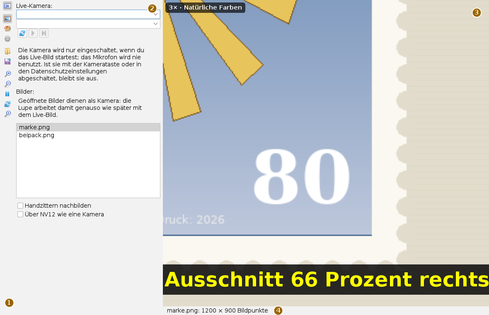
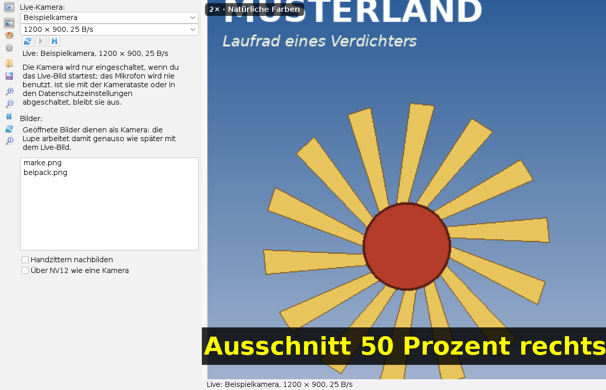
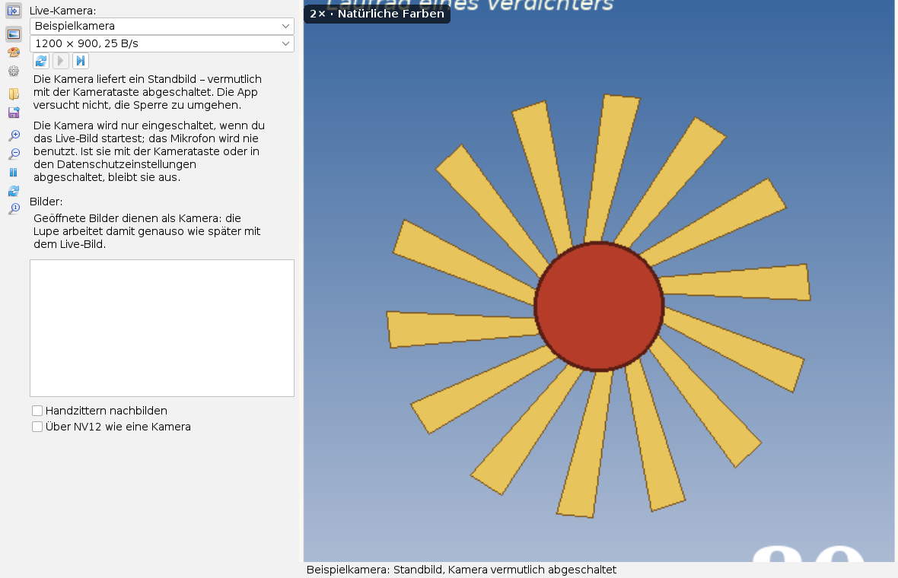
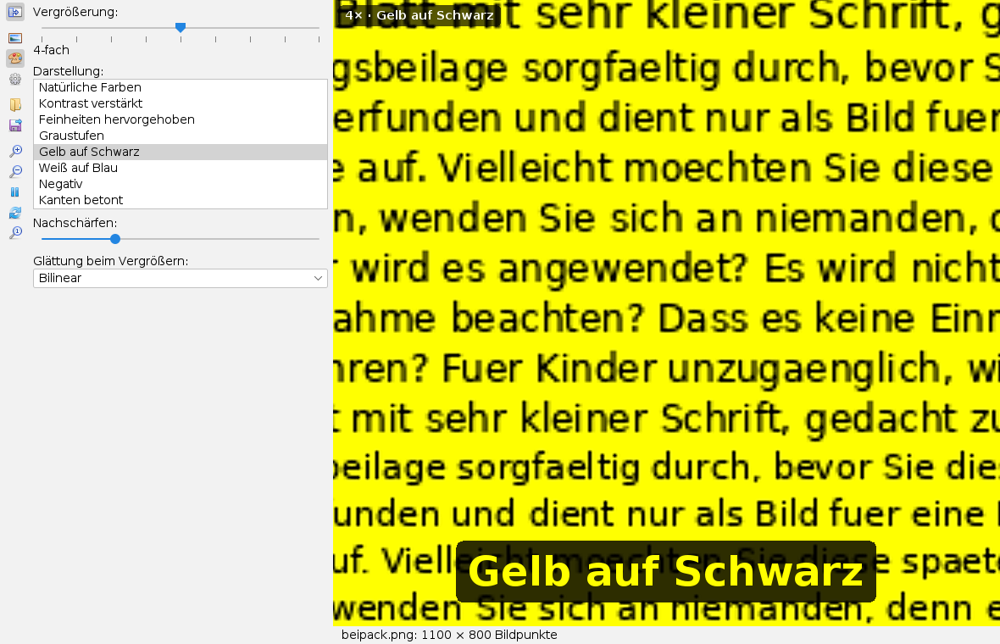
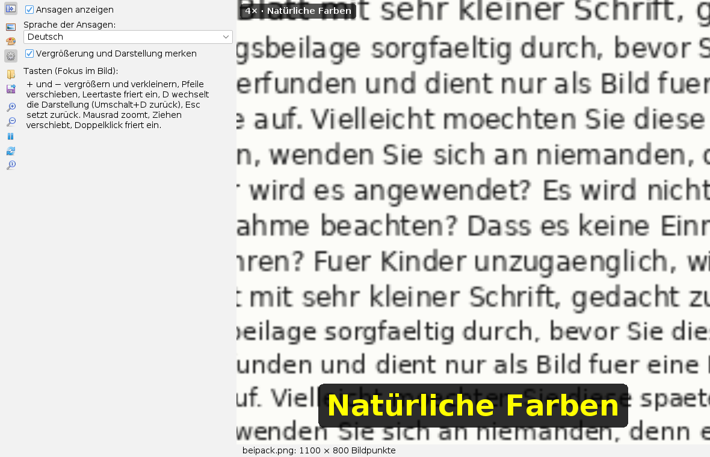

Die Lupe bedienen
Bedienseite, Stand 06.10.2026. Wie man Bilder öffnet oder die Kamera startet, vergrößert, den Ausschnitt verschiebt, die Darstellung wechselt, einfriert und speichert, und was die Lupe bei abgeschalteter Kamera meldet. Die Bilder sind Bildschirmfotos der App mit einer frei erfundenen Briefmarke und einem frei erfundenen Beipackzettel; die Kamera auf den Bildern ist nachgestellt.
Das Fenster
Die App öffnet man im Menü Anwendungen mit Lupe für Briefmarken und Kleingedrucktes oder mit Alt+B; eine Bilddatei öffnet sie direkt.

Die Lupenfläche nimmt fast das ganze Fenster ein. Oben links steht immer, wie stark vergrößert ist und welche Darstellung gilt. Jede Änderung erscheint einige Sekunden lang groß unten im Bild. Die Statuszeile nennt das Bild und seine Größe oder die laufende Kamera mit Format.
Die Leiste
Die Knöpfe tragen nur Symbole; was sie tun, steht im Tooltip. Die oberen drei wählen eine Karte, die übrigen wirken sofort.
| Tooltip | Was geschieht |
|---|---|
| Bildquelle: Kamera oder Bilder | Karte mit Live-Kamera und den geöffneten Bildern. |
| Darstellung und Vergrößerung | Karte mit Zoomregler, Darstellungen, Nachschärfen und Glättung. |
| Einstellungen | Karte mit Ansagen, Sprache und Merken. |
| Bilder öffnen | Eine oder mehrere Bilddateien öffnen; sie kommen in die Liste. |
| Angezeigtes Bild als PNG speichern | Speichert, was die Lupenfläche gerade zeigt. |
| Vergrößern, Verkleinern | Eine Zoomstufe weiter oder zurück. |
| Einfrieren / Wieder live | Hält das Bild an oder lässt es weiterlaufen. |
| Nächste Darstellung | Schaltet zur nächsten Darstellung. |
| Zurücksetzen | Zurück auf 2-fach, Bildmitte, natürliche Farben und live. |
Der Knopf ganz oben klappt die Karte ein; dann gehört der ganze Platz der Lupenfläche.
Bilder als Quelle
Bilder öffnen fügt Dateien der Liste unter Bilder: hinzu; ein Klick auf einen Eintrag zeigt das Bild. Geöffnete Bilder dienen als Kamera: die Lupe arbeitet mit ihnen genauso wie mit dem Live-Bild, nur steht das Bild still. Sehr große Bilder werden beim Laden verkleinert; die Statuszeile sagt dann, um welchen Faktor.
Handzittern nachbilden verschiebt jedes Bild um einige Bildpunkte, wie eine Hand, die die Kamera hält. Über NV12 wie eine Kamera wandelt jedes Bild in das Format einer USB-Kamera und zurück. Beides dient dem Ausprobieren; im Alltag bleiben die Kästchen leer.
Live-Kamera

- Unter Live-Kamera: den ersten Knopf drücken (Kameras suchen). Die App zählt die Kameras nur auf, sie schaltet keine ein.
- Eine Kamera in der oberen Liste wählen. Die App liest ihre Formate – dabei leuchtet die Kameralampe kurz – und schlägt das größte mit mindestens 15 Bildern je Sekunde vor. Ein anderes Format wählt man in der zweiten Liste.
- Den zweiten Knopf drücken (Live-Bild starten). Unter den Knöpfen steht nun „Live:“ mit Gerät und Format.
- Der dritte Knopf (Live-Bild beenden und Kamera freigeben) schaltet die Kamera aus; die Lampe erlischt.
Die Kamera wird nur eingeschaltet, wenn man das Live-Bild startet, auch nicht beim Öffnen der App oder beim Wiederherstellen des Arbeitsstands. Das Mikrofon benutzt die App nie.
Wenn die Kamera abgeschaltet ist

Viele Laptops haben eine Taste, die Kamera und Mikrofon abschaltet, und Windows kann den Zugriff in den Datenschutzeinstellungen sperren. Die Lupe respektiert beides und versucht nicht, die Sperre zu umgehen:
- Findet die Suche keine Kamera oder verweigert Windows den Zugriff, steht der Grund in der Karte und in der Statuszeile.
- Bricht das Bild im Betrieb ab, wird die Kamera freigegeben und nicht von selbst neu gestartet.
- Liefert der Treiber ein schwarzes Bild, fragt die Karte, ob die Kamera abgedeckt oder abgeschaltet ist.
- Liefert er etwa drei Sekunden lang immer dasselbe Ersatzbild, meldet die Lupe „Standbild“. Sobald sich das Bild wieder ändert, steht wieder „Live“ da.
Vergrößerung und Darstellung

Vergrößerung: wählt eine der Stufen 1, 1,5, 2, 3, 4, 6, 8, 12 und 16; darunter steht der Faktor. Darstellung: listet die acht Darstellungen; ein Klick wählt eine. Nachschärfen: stellt die Stärke der Unscharfmaskierung nach dem Vergrößern ein (ganz links = aus). Glättung beim Vergrößern: wählt Keine (harte Bildpunkte), Bilinear oder Bikubisch (schärfer).
| Darstellung | Wirkung |
|---|---|
| Natürliche Farben | Das Bild, wie es ist. |
| Kontrast verstärkt | Hellstes und dunkelstes Prozent werden auf Weiß und Schwarz gezogen. |
| Feinheiten hervorgehoben | Örtlicher Kontrast: feine Linien und Zähnung treten hervor. |
| Graustufen | Ohne Farbe, mit verstärktem Kontrast. |
| Gelb auf Schwarz, Weiß auf Blau | Zweifarbig: Dunkles wird schwarz bzw. blau, Helles gelb bzw. weiß. |
| Negativ | Hell und dunkel vertauscht; dunkle Schrift auf hellem Grund wird hell auf dunkel. |
| Kanten betont | Umrisse in kräftiger Farbe. |
Eine Tafel aller acht Darstellungen am selben Ausschnitt steht auf der Seite cmd-lupe.
Einstellungen

Ansagen anzeigen schaltet die große Schrift unten im Bild ein oder aus. Sprache der Ansagen: wählt Deutsch oder Englisch, unabhängig von der Sprache der Oberfläche. Vergrößerung und Darstellung merken stellt beim nächsten Start Zoomstufe und Darstellung wieder her.
Tastatur und Maus
Die Tasten wirken, wenn die Lupenfläche den Fokus hat; ein Klick ins Bild gibt ihn ihr.
| Taste oder Maus | Wirkung |
|---|---|
+ und −, Mausrad | vergrößern und verkleinern |
| Pfeiltasten, Ziehen mit der Maus | Ausschnitt verschieben |
| Leertaste, Doppelklick | einfrieren und wieder live |
D, Umschalt+D | nächste und vorige Darstellung |
Esc oder R | zurücksetzen |
Alt+B | App öffnen |
Was gespeichert wird
Angezeigtes Bild als PNG speichern schreibt das Bild so, wie es auf der Lupenfläche steht, mit Vergrößerung und Darstellung. Beim Sichern des Arbeitsbereichs merkt sich die App die Einstellungen, die Liste der geöffneten Bilder und das gewählte Bild. Die Kamera startet beim nächsten Mal nicht von selbst.
Grenzen
- Kameras werden bisher nur unter Windows gefunden.
- Ansagen erscheinen am Desktop als Schrift; gesprochen werden sie noch nicht. Lange Ansagen können über den rechten Rand hinausreichen.
- Die Zweifarben-Darstellungen färben nach Helligkeit: bei dunkler Schrift auf hellem Papier entsteht dunkle Schrift auf gelbem bzw. weißem Grund. Helle Schrift auf dunklem Grund liefert „Negativ“.
Was die App kann und worauf sie aufbaut, steht in der Übersicht.